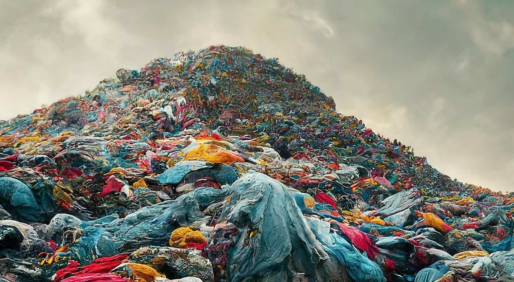

Article Title
Article content goes here.
Read moreMicroplastics pollution is a significant and often overlooked consequence of fast fashion. Many garments today are made from materials like nylon or polyester, which while long-lasting and affordabl shed microfibers during each laundry cycle, particularly during drying. Up to 700,000 microscopic fibers can be released into our oceans each time clothing is washed. esearch reveals that 35% of microplastics in oceans come from clothing. This highlights the fashion industry's significant role in global microplastic pollution.
An estimated 11.3 million tons of textile waste end up in U.S. landfills yearly, accounting for approximately 85% of all textiles. This equates to an alarming 81.5 pounds (37 kilograms) of textile waste per person per year.
Recycling and reusing clothes reduces the need to manufacture new clothes, which in turn reduces the use of water, chemicals and pesticides and reduces C02 pollution.
Article content goes here.
Read more